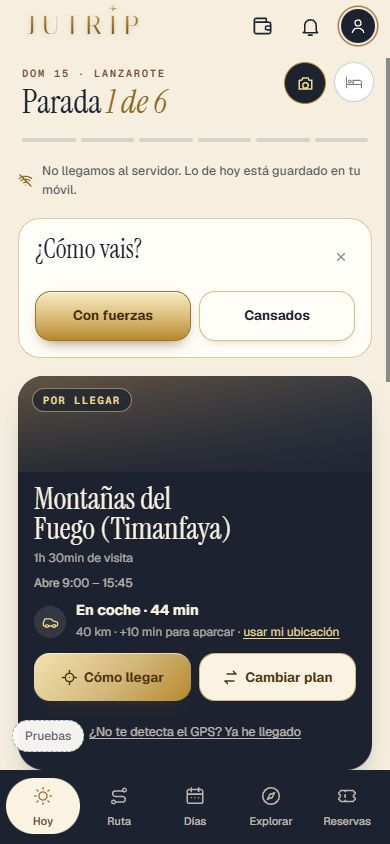

Qué pasó el 11-nov y qué se ha cambiado. Todo lo de abajo está probado con la pruebaEstabilidad (55 comprobaciones, 0 fallos). Falta pegar el SQL en Supabase y comprobar en producción (lo hace Eric y luego se mira).
1. Lo que encontré (en palabras sencillas)
Lo que no he podido mirar: el panel de Supabase pide la cuenta de Eric y los registros de Vercel del 11-nov ya no existen (el plan gratis solo guarda 1 hora). Por eso va un SQL de solo lectura (docs/dias/V1_MIRAR.sql) para ver si la tarea sigue activa, cuántas filas ocupa net._http_response y cuánto pesa cada viaje.
Las dos causas que sí se ven en el código:
La tarea de avisos (cada minuto): en cada vuelta bajaba el viaje entero (la ruta y las reservas) para ver si tocaba algún aviso. Con un viaje en curso eran 1.440 descargas al día. En el viaje de Eric (la ruta pesa unos 48 KB) son ~67 MB al día; con la ruta real de la base de datos, que puede pesar más, bastante más.
El sondeo de cada 30 segundos: con la app abierta y a la vista, cada móvil bajaba el viaje entero cada 30 s «por si lo había cambiado otra persona». Son ~2.900 descargas por día y móvil abierto.
Lo que pudo pasar el 11-nov: con Supabase pasado de cuota la respuesta se retrasa («upstream request timeout»); la librería de Supabase reintenta renovar la sesión durante minutos; a los 12 s la app daba por terminada la carga y enseñaba el formulario; y sin sesión recuperada pedía el correo. Es lo que se ha arreglado en el apartado 4.
2. Los avisos del viaje leen lo mínimo (migración 0077)
El plan de avisos de cada viaje se calcula una vez (y se rehace solo si el viaje cambia o cada 6 h para refrescar el tiempo) y se guarda en una tabla pequeña. La tarea solo lee los avisos que tocan. Además corre cada 5 minutos, y la base de datos mira por dentro si hay algo que hacer antes de llamar a la API.
Un día simulado en Lanzarote
Antes
Después
Llamadas a la API
1.440
6 de 288 vueltas
Salida de datos de la tarea
~67 MB
~190 KB
Viaje entero de 7 días
~470 MB
~1,3 MB
Mismas reglas de la HOY3: hora de Canarias, 4 al día como mucho, nada de noche, los compañeros del viaje compartido, el pase y el día de prueba.
3. El resto de la salida de datos
Sondeo por sello: cada 30 s la app pregunta solo por la fecha del último cambio del viaje (unos 100 bytes) y baja el viaje entero únicamente si cambió (y, por seguridad, cada 10 min).
Cuenta aproximada al mes, con 3 usuarios y la app abierta ~8 h al día: sondeo antes ≈ 4 GB, después ≈ 0,1 GB; tarea de avisos antes ≈ 0,5–1,7 GB por viaje, después ≈ 6 MB. (Son estimaciones con la ruta de Eric; el SQL del paso 1 dice cuánto pesan las rutas de verdad.)
Pendiente de medir: al abrir la app se bajan todos los viajes enteros de la cuenta. Con pocos viajes es poco; con muchos viajes de prueba pesa. Lo dirá el bloque 4 del SQL. No lo he tocado: cambiaría lo que se ve al abrir.
Si no basta: pasar a Pro antes del 11 de diciembre. Con estos dos arreglos no debería hacer falta, pero el panel (Usage › Egress por servicio) lo confirmará en unos días.
4. Una caída no echa al viajero
Mientras se comprueba la sesión, el logo. Con servidor caído, el logo con «No llegamos al servidor. Reintentando…» (nunca el formulario de origen y destino a quien ya tiene cuenta).
La sesión de una cuenta se copia aparte; si la librería la pierde por una caída, se recupera. Solo se borra al cerrar sesión a propósito, borrar la cuenta o empezar de cero.
Sin servidor no se crea una cuenta anónima nueva (se perdería lo de la cuenta).
Se abre HOY con lo guardado en el móvil y la línea «No llegamos al servidor. Lo de hoy está guardado en tu móvil.»; se reintenta cada 20 s.

HOY con Supabase caído (simulado)
Qué he cambiado en Vercel o Supabase
Nada. No he tocado producción en esta tanda. La migración 0077 va sin aplicar: la pega Eric.